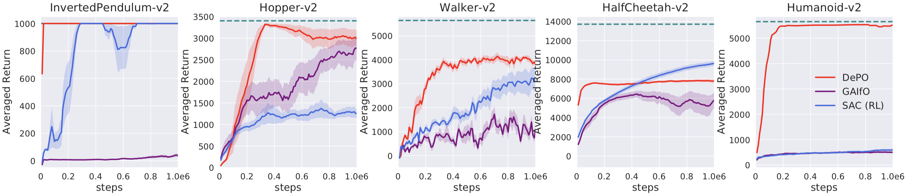

We propose a decouple policy structure and corresponding optimization method named Decoupled Policy Optimization (DePO). DePO explicitly decouples the policy as a high-level state planner and an inverse dynamics model, enables knowledge transfer and generalize the planner to different action spaces or state transition dynamics. Our experiments apply DePO in state-only imitation learning problems and reinforcement learning tasks, showing the effectiveness of DePO on learning a generalized state planner while achieving the best imitation performance, and can be transferred to train agents with different action spaces and action dynamics with much higher efficiency. We demonstrate the appealing usage of DePO for transferring across different tasks by pre-training, and the potential for co-training agents with various skills.
How to model and generalize the high-level planning mode? How to transfer such an ability?
A state-to-action policy is ad-hoc to the action space and dynamics. Hard to transfer!
We need a transferable policy structure.
Before introducing the work, let's have some notation in an MDP first. Consider a \(\gamma\)-discounted infinite horizon Markov decision process (MDP) \(\mathcal{M} = \langle \mathcal{S}, \mathcal{A}, \mathcal{T}, \rho_0, r, \gamma \rangle\), where \(\mathcal{S}\) is the set of states, \(\mathcal{A}\) is the action space, \(\mathcal{T}: \mathcal{S} \times \mathcal{A} \rightarrow \Delta(\mathcal{S})\) is the environment dynamics distribution, \(\rho_0 \rightarrow \Delta(\mathcal{S})\) is the initial state distribution, and \(\gamma\in [0,1]\) is the discount factor. The agent makes decisions through a policy \(\pi(a|s): \mathcal{S} \rightarrow \Delta(\mathcal{A})\) and receives rewards \(r: \mathcal{S} \times \mathcal{A} \rightarrow \mathbb{R}\). In our paper, we assume deterministic environment dynamics \(\mathcal{T}\) such that \(s' = \mathcal{T}(s,a)\).
Ok, let's see how a decoupled policy works! Formally, the policy can be decoupled as two terms: $$\pi = \underbrace{\mathcal{T}^{-1}_{\pi}}_{\text{inverse dynamics}}(\underbrace{\mathcal{T}(\pi)}_{\text{state planner}})~.$$ More rigorously, the decoupled function is: $$ \begin{eqnarray} \pi(a|s) &= \int_{s'} \mathcal{T}(s'|s,a)\pi(a|s)\mathop{}\!\mathrm{d} s'\\ &= \int_{s'} \frac{\rho_{\pi}(s,s')I_{\pi}(a|s,s')}{\rho_{\pi}(s)}\mathop{}\!\mathrm{d} s'\\ &= \int_{s'} h_{\pi}(s'|s) I_{\pi}(a|s,s')\mathop{}\!\mathrm{d} s'~, \end{eqnarray}$$ where \(h\) denotes a state planner, and \(I\) a inverse dynamics model. Both are policy dependent. Now, we have a depoupled policy stucture! But how to train it (them)?
$$\newcommand{\fd}{\text{D}_{\text{f}}} \min_{\psi}L^{I} = \mathbb{E}_{(s,s')\sim\pi_{\mathcal{B}}}[\fd( I_{\pi_{\mathcal{B}}}(a|s,s')\| I_{\phi}(a|s,s'))]~.$$ In the equation, \( \pi_{\mathcal{B}} \) denotes a sampling policy. Actually, when the dynamics function is deterministic, different policies can share a unified and global inverse dynamics function. Therefore, we can train the function using all data collected during training.
The state planner can also be optimized via supervised learning if we have optimal (expert) data transition, e.g., when performing imitation learning tasks (\(h_{E}\) denotes the state planner of the optimal policies). $$\min_{\psi}L^{h} = \mathbb{E}_{(s,s')\sim E}[\fd( h_{E}(s'|s)\| h_{\psi}(s'|s))]~.$$ However, it is well known that only direct supervised learning in imitation learning can cause compouding error problem, and also, we should consider how to optimize when we have no access to expert demonstrations. Therefore, we should derive a way to utilizing rewards.
A direct idea come to our head, the state planner and the inverse dynamics can be seen as an integral policy function, whose input is state, and output is action, then why not use policy gradient on this two term directly?
Quickly, we realize that if we want to optimzie the state planner, we must fixed the inverse dynamics function to make the optimization meaningful; otherwise, if two modules are optimized by policy gradient at the same time, we have no guarantee that these two functions are actually serving as the function that we want!
In this case, when we compute the policy gradient over decoupled policy, we can write it as:
$$
\newcommand{\dif}{\mathop{}\!\mathrm{d}}
\begin{eqnarray}
\nabla_{\phi, \psi} \mathcal{L}^\pi = \mathbb{E}_{(s,a)\sim\pi}\left [Q(s,a)\nabla_{\phi,\psi}\log{\pi_{\phi,\psi}(a|s)}\right ]
= \mathbb{E}_{(s,a)\sim\pi}\Big[\frac{Q(s,a)}{\pi(a|s)}\Big(\int_{s'}I(a|s,s')\nabla_{\psi}h_{\psi}(s'|s)\dif s' +\mathbb{E}_{s'\sim h}\left [\nabla_{\phi}I_{\phi}(a|s,s')\right ]\Big)\Big]~.
\end{eqnarray}
$$
This simply expands the policy gradient into the decoupled function.
For simplicity, we can also rewrite the deoupled policy with the reparameterization trick and bypass explicitly computing the integral over \(s'\), as:
$$
s' = h(\epsilon;s), ~~
\pi(a|s)=\mathbb{E}_{\epsilon\sim \mathcal{N}}\left [ I(a|s,h(\epsilon;s)) \right ]~,
$$
where \(\epsilon\) is an input noise vector sampled from some fixed distribution, like a Gaussian.
In this form, we rewrite the decoupled policy gradient (DePG) as:
$$
\begin{eqnarray}
\nabla_{\psi} \mathcal{L}^\pi
= \mathbb{E}_{(s,a)\sim\pi,\epsilon\sim\mathcal{N}}\left [\frac{Q(s,a)}{\pi(a|s)} \big(\nabla_{h}I(a|s,h_\psi(\epsilon;s))\nabla_{\psi}h_{\psi}(\epsilon;s)\big)\right ]~.
\end{eqnarray}
$$
Now let's try to understand what the DePG is doing. By fixing the inverse dynamics function, we are taking the knowledge from the inverse dynamics about action \(a\) to update parameters of the state planner by updating the prediction about the next state with error \(\Delta s' = \alpha \nabla_{h}I(a|s,h(\epsilon;s))\) and learning rate \(\alpha\)!
Seems utizling the DePG we can train a state planner! But is it that easy to do?
We learn the decoupled policy on a simple grid world example shown as below. This is a imitation learning setting, where the expert only walking on the yellow grid from the bottom left to the upper right corner. The agent starts from a random grid except the shaded zone. In fact, we can also regard the task from an RL perspective, such that the agent is only rewarded on the grid that the expert experienced.
We name the problem as agnostic decoupled policy gradient. In fact, the problem comes from a constraint on the inverse dynamics modelling's inputs, which requires the prediction of the target planner to be a legal neighbor state that follows the inputs training data distribution.
Otherwise, the state transition pair \((s, s')\) will be an illegal transition and leads the corresponding output actions to be agnostic.
An illegal state transition could still be a legal input to the approximated inverse dynamics model if it may still provide a feasible action to interact with the environment.
However, since we are utilizing the gradient of the inverse dynamics model \(\nabla_{h}I(a|s,h_\psi(\epsilon;s))\), we do not expect a generalization on illegal transitions to get a feasible action.
In other words, simply optimizing \(\psi\) through DePG, we cannot constrain the gradient provided by the inverse dynamics within pointing to a reachable target state, and the state planner will be trained to predict an arbitrary and unreasonable state that can still lead the inverse dynamics model to give a feasible action.
Let's reconsider what DePG is doing.
In principle, the goal of DePO is to learn a planner that determines the high-level target to reach, yet taking which action to achieve is inessential.
Therefore, no matter what action \(a\) the inverse dynamics takes, as long as it leads the agent from \(s\) to \(s'\), the integrated policies are all optimal policies on \(s\) and their value \(Q_{\pi}(s,a)\) should be the same. On this condition, give a state-action pair \((s,a)\) and a legal transition \(s'\), we can assuming the inverse dynamics as a deterministic distribution on \(a\) with the probability of one, i.e., \(s'\) has been achieved by \(I(a|s,s')=1\), then, the probability of the decoupled policy \(\pi(a|s)=h(s'|s)\), where \(s'\) is the target state.
$$
\nabla_{\psi} \mathcal{L}^\pi = \mathbb{E}_{(s,a,s')\sim\pi}\left [Q(s,a) \nabla_{\psi}\log h_{\psi}(s'|s)\right ]~.
$$
We name the gradient as Calibrated Decoupled PG (CDePG). Optimizing with CDePG can be realized as maximizing the probability to target state \(s'\) on state \(s\) if \(a\) is a good action regarding the inverse dynamics is accurate.
However, solely updating CDePG leads to a severe exploration problem since the planner is only allowed to predict a visited state. This is easy to understand. In the form of CDePG, only reached states \(s'\) are used for updating the planner with a specified \(a\), therefore, we cannot raise any novel action to observe novel states. In normal RL with normal state-to-action policy, this is achieved by the reweighting of the Q function. After an training iteration, the Q function updates its value prediction by enhancing some action while cut down the others. The uncertainty at the prediction of the Q function raises many novel actions and can reach many novel states in the online training procedure. And CDePG does not have such a property since its action is determined by the low-level inverse dynamics function.
Don't be sad! Remember we have derived DePG, which directly optimized the state planner to give some unknown (may illegal) target states to explore the most promising actions. Thereafter, in practice, we choose to jointly optimize DePG with CDePG and find it can achieve a good balance between exploration and accurate prediction on legal targets. Happy ending!
In our experiment, we also find that even without the weighting term \(Q(s,a)\) in CDePG, we can still realize great results. In this way, CDePG actually can be reilized as a MLE regularizer that constraint the state planner to have legal outputs.
We only cover some main results here. For complete results please refer to the paper. The experiments are designed to show: 1) the learnability of DePO; 2) the transferability of DePO.
1. State plan of DePO on the grid setting.
DePO generalizes the planning into every out-of-demonstration state (white blocks) with legal transitions.
2. Learning curve on the grid setting.
The first 100 epochs train each algorithm with \(4 \times k (k=1)\) action spaces. After 100 epochs we change \(k=4\), resuting in an action space of \(4\times 4\). All algorithms except DePO requires to retrain from scratch, but DePO only have to train the inverse dynamics model while keep the state planner.
3. Learning from scratch on Mujoco envs. Imitation task (no reward, only demos).
4. Transfer learning on Mujoco envs. Imitation baselines.
The transfer setting can be further refered to the paper.

5. Learning from scratch on Mujoco envs. Reinforcement learning task (learn with rewards).
Pred-Real MSE denotes the averaged difference between the predicted states and the achieved one, showing that the agent can really achieve where it plans with DePO.
6. Transfer learning on Mujoco envs. Reinforcement learning baseline (SAC).
Pre-training and transfer the state planner results in rather efficient training! Even beat SAC a lot!
See more interesting experimental results in our paper!
If you cannot access YouTube, please download our video here.